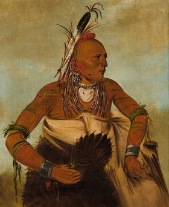

Indio Osage

Guerreiro Osage
(Pintura de 1834)
Viviam em vilarejos fixos à beira dos rios Missouri e Osage, mas erguiam acampamentos de caça nas Grandes Planícies. Complementavam sua alimentação, baseada em carne de búfalo e cervídeos, plantando milho e abóbora. Durante a colonização europeia, os osages ficaram conhecidos como um povo hábil na guerra.
Indios Americanos
A fortuna proveniente do petróleo encontrado na reserva onde os nativos viviam atraiu forasteiros mal-intencionados e, entre 1921 e 1925, mais de sessenta Osage morreram em circunstâncias misteriosas,e poucos conseguiram a comprovação na Justiça de que foram, na verdade, vítimas de assassinatos.